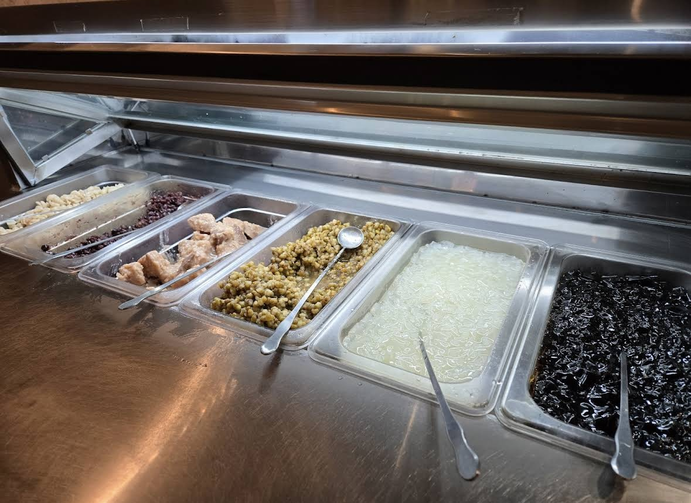
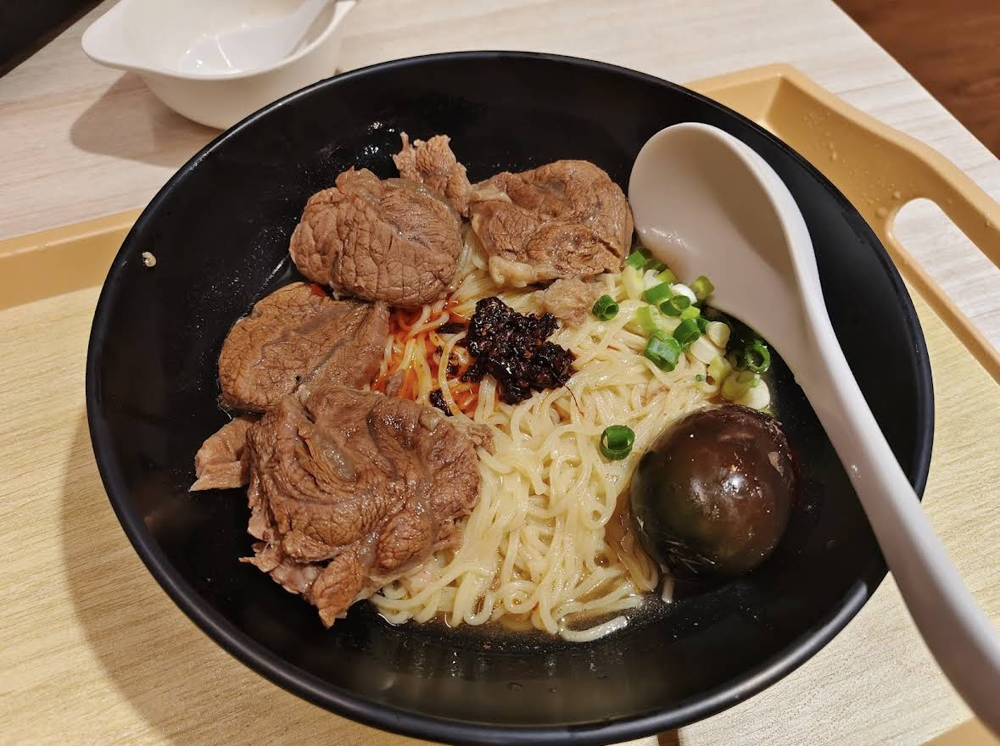

先跟大家說聲對不起，因為我發現他居然歇業了！不過他是連鎖店，所以想吃的朋友們，還是可以在google map 上面查詢其他分店～
這家店我要推薦的不是他的主餐，而是他的豆花吃到飽～
只要在店內用餐，就可以免費吃豆花，店家有給六種配料，雖然是免費的，但是他的料超級實在，最喜歡的就是芋頭，是真的芋頭！！！某些冰店要再加錢才能加的芋頭，在這邊給你免費吃到飽，而且豆花也是非常的綿密細緻，每次來吃這家店真的就是奔著他的豆花來的。
主餐的部分，我覺得就是中規中矩，有牛肉麵、拉麵、羊肉麵等，整體表現不差，價位大約落在180-210元之間，以台北的物價來說，非常划算！我自己最推薦的品項是椒麻皮蛋牛肉乾拌麵，牛肉給的很大塊，調味也不錯（如果不吃皮蛋的話，可以換成溏心蛋，很貼～）
如果喜歡吃芋頭、豆花、牛肉麵的人，這間店對你來說，一定是100分～